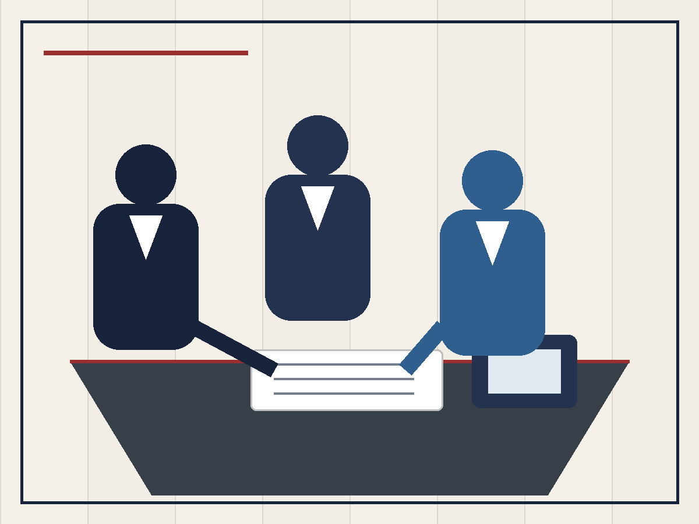

Governance & Policy Development
Build and improve the policies, standards, and operating practices your MSP needs to mature with clarity and confidence.
Foundation Advisory helps managed service providers strengthen their business through practical guidance in governance, cybersecurity, compliance readiness, policy development, vendor decisions, and client-ready service strategy.
Your clients are asking better questions. Auditors, cyber insurers, and vendors are asking for stronger evidence. Foundation Advisory helps you respond with practical guidance, clearer documentation, and a stronger operational foundation.
Build and improve the policies, standards, and operating practices your MSP needs to mature with clarity and confidence.
Strengthen your security posture and prepare for client scrutiny, audit requests, questionnaires, and practical framework alignment.
Make better decisions about vendor strategy, service packaging, roadmap priorities, and client-facing advisory offerings.
Foundation Advisory exists to help MSPs move beyond reactive service delivery and build stronger foundations for governance, security, compliance, and client trust.
Led by Michael Stocklin, Foundation Advisory brings practical experience across managed services, IT audit, banking technology leadership, cybersecurity programs, vendor oversight, and policy development.

Whether you are preparing for customer scrutiny, improving internal structure, responding to compliance requests, or building a more mature service model, Foundation Advisory helps you take the next step with wisdom, order, and practical focus.
Identify the policies, risks, framework gaps, vendor decisions, and operational weak points that are actually holding you back.
Prioritize what should be fixed now, what can wait, and how to improve your MSP without creating unnecessary complexity.
Put better structure, documentation, security habits, and service strategy in place so your business is more durable over time.
Foundation Advisory supports MSPs at different stages of maturity— from those needing a steadier operational footing to those building stronger governance, compliance, and client-facing advisory capabilities.
For smaller MSPs that need regular help with governance, security habits, policies, and compliance planning.
For MSPs improving maturity, tracking a roadmap, answering questionnaires, and preparing for greater client scrutiny.
For MSPs that want deeper advisory support, stronger framework alignment, and help building client-facing advisory services.
Engagements can include advisory meetings, roadmap reviews, policy and governance guidance, compliance and questionnaire support, vendor input, service packaging feedback, and practical help strengthening the business over time.
Let’s talk about where your MSP is today, what your clients are asking for, and what practical steps will help you move forward.
Email Michael